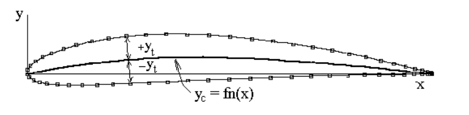

AEROFOIL SECTION 2-D GEOMETRY
Aerofoil sections come in a variety of shapes and sizes. Some are classified by their geometric properties while others by their aerodynamic properties. One of the earliest and simplest naming conventions is that derived by the National Advisory Committee for Aeronautics (NACA, now renamed NASA). Early NACA 4 and/or 5 Digit aerofoil families used simple geometry based definitions to define the shapes. In this series, the designation numbers determine the mean line and thickness distribution of the section.More modern designation numbers, such as the 6 and 6A series sections incorporate values related to the aerodynamic behaviour of the section and are constructed by mapping from the desired aerodynamic properties to a geometry that will then produce these. All section designation techniques will have methods for determining the surface x,y coordinates. The NACA systems below represent a first attempt at a parametric representation of camber and thickness.
NACA 4 and 5 Digit Aerofoil Sections.
The NACA 4 and 5 Digit aerofoils represent two families of aerofoil section that can be generated by the use of a set of simple polynomial equations. While these sections are slightly out of date in terms of current aircraft usage, they still represent useful sections and are easy to create. The aerofoils are created by summing a thickness distribution with a given mean line equation.

For both families of aerofoil section the thickness distribution is as follows,
$$y_t=t/{0.2}(0.2969√{x}-0.126x-0.3516x^2+0.2843x^3-0.1015x^4)$$
where $ x $ is a position along the chord line, given as a fraction of chord and $ t $ is the value of maximum thickness as given by the last two digits of the aerofoil designation number. (ie 0012 = symmetric section with t(max)=0.12c). For the 4-digit family, the mean line is given as,
$$\text"for "0<x<p\text" "y_c=m/p^2(2px-x^2)$$
$$\text"for "p<x<1\text" "y_c=m/{(1-p)^2}(1-2p+2px-x^2)$$
Values $ p $ and $ m $ are given
from the first two digits of the designation number. $ m $ being
the value of maximum camber height (1/100ths chord) and $ p $
being the position of maximum camber height (1/10ths chord).
(ie
2412 = maximum camber height =0.02c located at 0.4c).
For the 5-digit family, the mean line is given as,
$$\text"for "0<x<p\text" "y_c=k_1/6(x^3-3mx^2+m^2(3-m)x)$$
$$\text"for "p<x<1\text" "y_c=k_1/6m^3(1-x)$$
Values (p), (k1) and (m) are found from the following table based on the first three digits of the designation number.
|
Mean Line No. |
p |
m |
k1 |
|
210 |
0.05 |
0.0580 |
361.4 |
|
220 |
0.10 |
0.1260 |
51.64 |
|
230 |
0.15 |
0.2025 |
15.957 |
|
240 |
0.20 |
0.2900 |
6.643 |
|
250 |
0.25 |
0.3910 |
3.230 |
The value of maximum camber height $ m $ and
its position $ p $ will now be determined by the
section construction process.
(ie 23012 = maximum camber height
=0.02c located at 0.15c).
The construction of the section is then done numerically by identifying surface points which are the sum of camber and thickness effects. Points are normally generated using a cosine distribution of chord $ x $ coordinates. For each $ x $ coordinate an upper ( $ x_{upper}, y_{upper} $ ) and lower surface ( $ x_{lower} , y_{lower} $ ) data point is created by applying the above equations and construction method.
$$x_{upper}=x-y_t\sin(θ)\text" "x_{lower}=x+y_t\sin(θ)$$
$$y_{upper}=y_c+y_t\cos(θ)\text" "y_{lower}=y_c-y_t\cos(θ)$$
here $ θ $ is the angle of the mean line gradient ${dy_c}/{dx}$ at the coordinate $ x $ location. A leading edge radius $ r $ is applied to smooth the front data points.
$$r=1.1019t^2$$
NACA 6 and 6A Series Aerofoil Sections
These aerofoil sections are designed to produce laminar flow and low drag over a reasonable range of angles of attack. The thickness distribution is thus based on a prescribed velocity distribution for the specific symmetric section required. The camber line is a polynomial function based on the desired ideal lift coefficient.
For 6 Series Sections the designation numbers represent the aerofoil aerodynamic properties as shown in the following example,
|
64(1)-215 |
|
|
6 |
-- 6 series designation number. |
|
4 |
-- location of Cp(min) as 1/10ths chord. |
|
(1) |
-- 1/2 width of drag bucket in CL counts (0.2) |
|
2 |
-- Ideal (or Design) CL value. |
|
15 |
-- Max thickness to chord ratio, 1/100ths chord |
References
"Theory of Wing Sections" I.H.Abbott & A.E.Von Doenhoff, Dover, NY, 1959.
"Computer Program to Obtain Ordinates for NACA Aerofoils." Ladson, Brooks, Hill & Sproles, NACA Langley, NASA TM-4741
Software
The following applications can construct the various families of NACA 4,5 6 and 6A series sections using the techniques described by Ladson, Brooks, Hill and Sproles.
In these cases the data file contains 175 coordinate points with compact spacing closer to the leading edge of the section.
Links to Other Aerofoil Section Data
Page with a large number of aerofoil sections. ( Martin Selig's pages at UIUC)